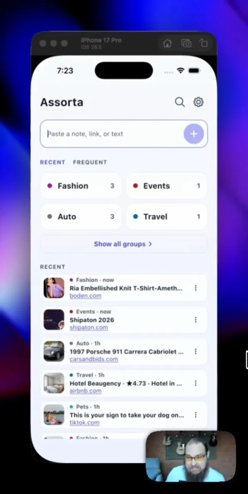

Входящие для заметок и ссылок, которые раскладывает AI
Сохраняйте всё. Находите за секунды.
Assorta - одна быстрая папка «Входящие» для ссылок, заметок и идей. Бросьте сюда что угодно - AI положит это в нужную группу, и вам больше не придётся раскапывать кладбище сохранённого.
Скачать Assorta →
Демо
Посмотрите, как ссылка ложится в нужную группу
Меньше сорока секунд в приложении: ссылка заходит, AI читает её и раскладывает, и она уже лежит в нужной группе, когда вы за ней придёте. Ничего не надо называть, тегировать и держать папки в порядке.
Скачать Assorta →Больше нравится YouTube? Смотрите там ↗
Взгляд внутрь
Пять шагов по Assorta
Поделитесь ссылкой из любого приложения или вставьте её, посмотрите, как AI её раскладывает, а потом листайте группы с большими превью - Спорт, Авто, Список покупок, Хобби и другие.
Ссылки, логотипы и изображения товаров на этих экранах - примеры содержимого. Assorta не связана с показанными брендами.
← листайте экраны →
Как это работает
Вы добавляете. AI раскладывает. Вы находите.
Никаких папок, никаких тегов, никакого дня разбора завалов. Сортировка, которую вы всегда откладываете, - это как раз то, что происходит само.
Бросьте сюда
Вставьте текст или поделитесь прямо из YouTube, TikTok, Instagram или браузера - Assorta живёт в вашем меню «Поделиться».
AI раскладывает
Assorta читает, что это, и кладёт в нужную группу: Путешествия, Кулинария, Список желаний, Кино и ТВ, Здоровье - 30+ групп, ноль настройки.
Быстро находите
Один цветной экран с большими превью ссылок. Откройте группу - всё ровно там, где вы этого ждёте, - или ищите по заметкам и группам, когда нужна одна конкретная запись.
Вспоминайте зачем
Нажмите AI-конспект на сохранённой ссылке, и страница вернётся в нескольких строках, прямо в списке. Входит в Assorta Pro. Если на странице не из чего собрать конспект, Assorta так и скажет, а не выдумает его.
Возможности
Сделано на те две секунды, которые вы готовы потратить
Сохранить должно стоить ничего. Найти - ещё меньше.
Сохранение из меню «Поделиться»
Assorta стоит в системном меню «Поделиться» на Android и iOS. Два касания - и сохранено, не выходя из приложения, в котором вы находитесь.
30+ умных групп
Assorta кладёт каждое сохранение в одну из 30+ встроенных групп в момент, когда вы его добавляете, - Путешествия, Кулинария, Список желаний, Спорт. Не согласны? Смените группу одним касанием, прямо из подтверждения.
Превью ссылок
Assorta сохраняет у ссылки картинку и заголовок - кадр из YouTube, фото товара, обложку статьи, - чтобы вы узнавали её с одного взгляда.
AI-конспект
Нажмите AI-конспект на сохранённой ссылке, и Assorta вернёт страницу в нескольких строках, не открывая её. Конспект хранится вместе с заметкой, поэтому второй раз он открывается мгновенно и без сети. Входит в Assorta Pro.
Поиск, когда он нужен
Assorta ищет по названиям групп, тексту самой заметки и заголовку ссылки из одного поля - для той записи, которая легла не туда, где вы искали сначала.
Сохраняет в фоне
Assorta дописывает сохранение в фоне, поэтому, даже если переключиться посреди него, запись всё равно ляжет в свою группу. Ничего не теряется между приложениями.
Android и iOS
Assorta работает на телефонах и планшетах Android, на iPhone и iPad. Заметки остаются на том устройстве, где вы их сохранили; синхронизации между устройствами пока нет.
Сортировка, которая не кончается
Assorta сортирует с помощью AI, пока держатся бесплатные сортировки, а потом переходит на автоматическую сортировку, которая работает на устройстве примерно по 3000 отобранным терминам. Так или иначе заметка ложится в группу - раскладывать оно не перестаёт, когда заканчивается лимит.
Группы
Место для всего, что вы когда-нибудь сохраните
Эти группы уже есть в момент установки - никакой тревоги перед пустым блокнотом, никаких домашних заданий по таксономии.
FAQ
Вопросы, которые задают перед установкой
Что такое Assorta?
Assorta - одна папка «Входящие» для ссылок, заметок и идей на Android и iOS. AI читает то, что вы сохраняете, и кладёт это в одну из 30+ групп, чтобы вы находили это потом без папок и тегов.
Как Assorta решает, в какую группу что положить?
Assorta читает текст или страницу за ссылкой и выбирает подходящую группу - Путешествия, Кулинария, Список желаний, Спорт и остальные. Выбор виден сразу, в тот момент, когда он сделан.
Что можно сохранять в Assorta?
Ссылки, которыми вы делитесь из любого приложения, и текст, который вставляете сами. Сохранённая ссылка остаётся со своей картинкой и заголовком, поэтому вы узнаёте её в списке, не открывая.
Assorta бесплатна?
Assorta бесплатна при установке и бесплатна в работе. Первые 15 AI-сортировок бесплатны; дальше раскладывать оно не перестаёт, а лимит AI-сортировки снимает Assorta Pro.
Что такое AI-конспект?
Нажмите AI-конспект на сохранённой ссылке, и Assorta вернёт страницу в нескольких строках, прямо в списке. Конспект хранится вместе с заметкой, поэтому второй раз он открывается мгновенно и работает без сети. Если на странице не из чего собрать конспект, Assorta так и скажет, а не выдумает его.
Можно ли сохранять из других приложений?
Да. Assorta стоит в системном меню «Поделиться» на Android и iOS, поэтому ссылка из YouTube, TikTok, Instagram или браузера - это два касания.
Синхронизирует ли Assorta между устройствами?
Пока нет. Заметки остаются на том устройстве, где вы их сохранили; синхронизация - в планах Assorta Pro.
Показать ещё вопросыПоказать меньше
А если AI выберет не ту группу?
Смените её одним касанием, прямо из подтверждения, - запасные группы стоят рядом.
Что будет, когда бесплатные AI-сортировки закончатся?
Раскладывать Assorta не перестанет. Она переходит на автоматическую сортировку, которая работает на устройстве примерно по 3000 отобранным терминам и никогда не заканчивается; лимит AI-сортировки снимает Assorta Pro.
Что даёт Assorta Pro?
Assorta Pro снимает лимит AI-сортировки и добавляет AI-конспект. Подписка необязательна, и её тарифицируют Apple или Google.
Можно ли искать по сохранённому?
Да. Одно поле ищет по названиям групп, тексту самой заметки и заголовку ссылки, и работает без сети, потому что ваши заметки лежат на устройстве.
Где хранятся мои заметки?
На вашем устройстве. Assorta не держит ваши заметки на наших серверах.
Нужен ли аккаунт?
Нет. Вход необязателен; он сохраняет Assorta Pro на других ваших устройствах.
Работает ли Assorta без интернета?
Ваши заметки, ваши группы и уже сделанные конспекты лежат на устройстве, поэтому просмотр и поиск работают офлайн. AI-сортировке и AI-конспекту нужна сеть; автоматической сортировке - нет.
Можно ли потом переместить заметку в другую группу?
Да. Откройте действия на заметке и выберите «Переместить».
Можно ли экспортировать заметки?
Пока нет. Экспорт и резервная копия - в планах Assorta Pro.
На каких устройствах работает Assorta?
На телефонах и планшетах Android, на iPhone и iPad.
На скольких языках говорит Assorta?
На 31, от английского и украинского до японского, корейского и арабского. Assorta следует языку вашего устройства, и его можно сменить в «Настройках».
Чем Assorta отличается от закладок или приложения для заметок?
В папке закладок вы сами выбираете папку, а в приложении для заметок сами придумываете название. Assorta читает то, что вы сохранили, и убирает это на место сама - вы пропускаете именно сортировку.
Как удалить аккаунт и мои данные?
Откройте «Настройки» и нажмите «Удалить аккаунт» в приложении - или напишите нам, и это сделаем мы. Страница удаления аккаунта рассказывает, что удаляется, а что остаётся.
Скачать Assorta
Вы в будущем это найдёте.
Уже в Google Play и App Store, установка бесплатна.
Есть идея для Assorta? Оставьте предложение и голосуйте за то, что делать дальше →
О нас
Кто делает Assorta
Assorta - приложение для заметок и ссылок для Android, iPhone и iPad, бесплатное при установке и в работе. Первые 15 AI-сортировок бесплатны, и раскладывать оно не перестанет и потом. Assorta Pro - необязательная подписка, которая снимает лимит AI-сортировки и добавляет AI-конспект; оплата через Apple или Google.
Assorta разрабатывает и поддерживает:
Individual Entrepreneur Yevhen TroshchiiOdesa, Ukraine
contact@assorta.app